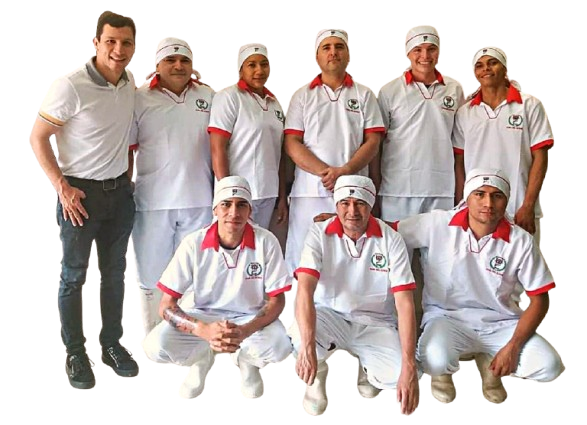

Conoce Nuestra Esencia
Somos una empresa 100% llanera con más de 70 años de tradición y calidad, llevando lo mejor de nuestra región a tu mesa.
Misión
Elaborar y comercializar productos tradicionales, deliciosos, nutritivos y de excelente calidad, que satisfagan los gustos y necesidades de nuestros clientes, aplicando Buenas Prácticas de Manufactura en cada proceso.
Visión
Fortalecer nuestro liderazgo en el sector de alimentos y bebidas, ampliando nuestra presencia a nivel nacional y manteniendo altos estándares de calidad en producto y servicio.
Nuestros Principios
- Nuestra Gente
- Nuestros Productos
- Los Clientes
- Nuestro Deber
- El Éxito de Nuestra Empresa
Política de Calidad
Nos comprometemos a producir y comercializar productos bajo altos estándares de calidad, aplicando Buenas Prácticas de Manufactura y el sistema HACCP. Garantizamos higiene, inocuidad y control en todas las etapas del proceso.
